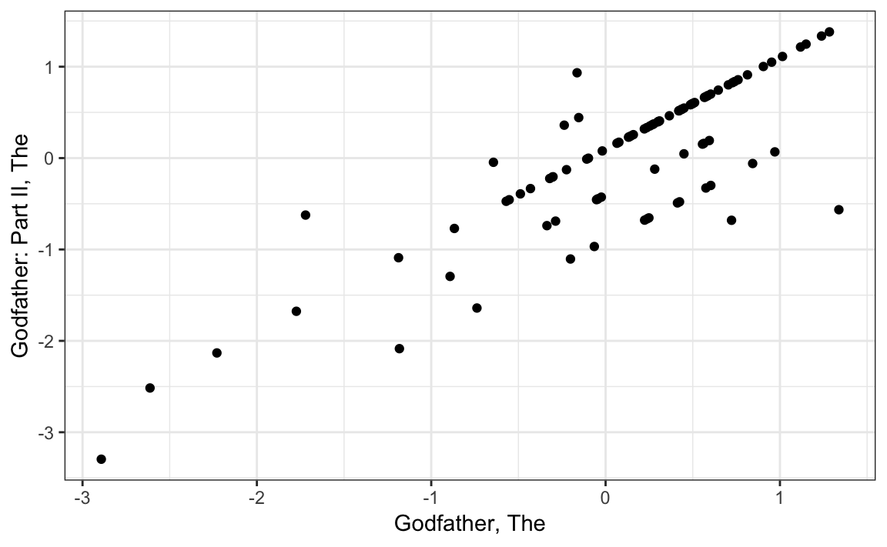
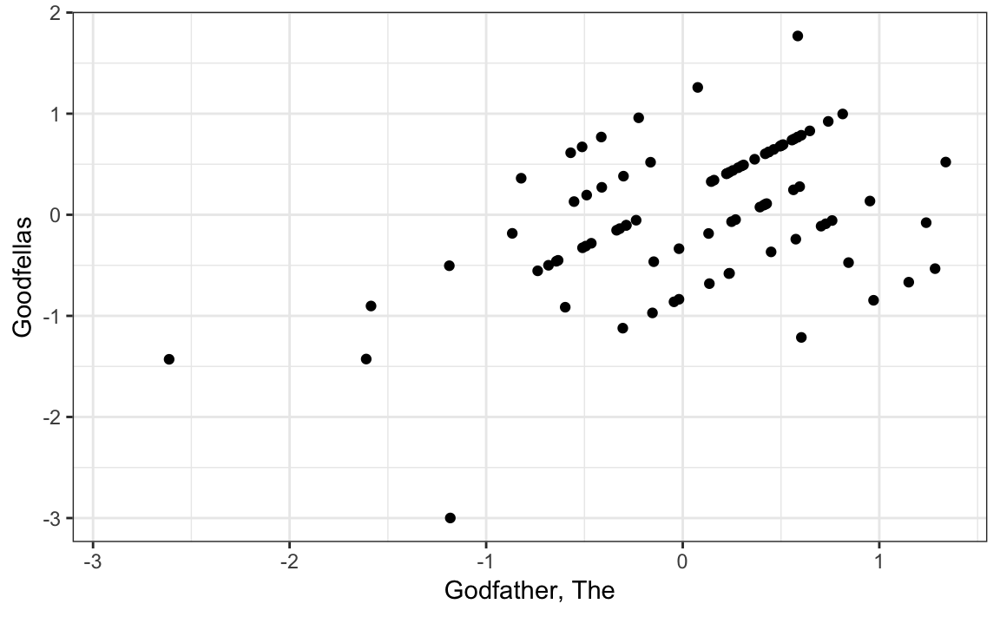
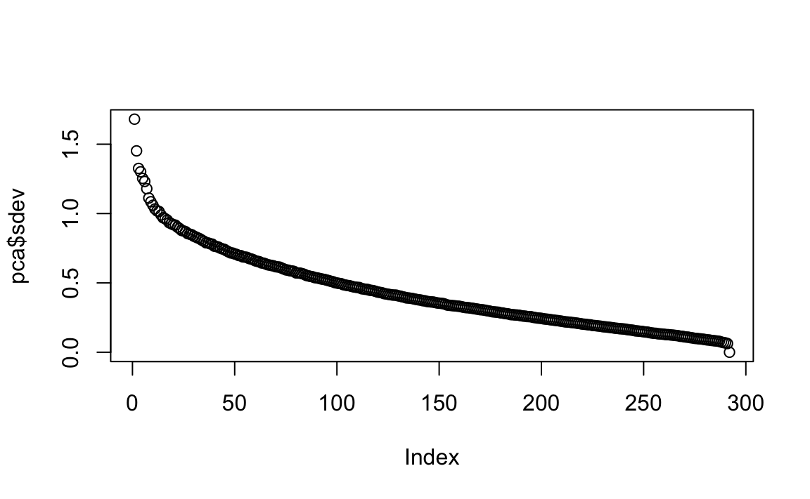

Chapter 86 Matrix factorization
Matrix factorization is a widely used concept in machine learning. It is very much related to factor analysis, singular value decomposition (SVD) and principal component analysis (PCA). Here we describe the concept in the context of movie recommendation systems.
We have described how the model:
\[ Y_{u,i} = \mu + b_i + b_u + \varepsilon_{u,i} \]
accounts for movie to movie differences through the \(b_i\) and user to user differences through the \(b_u\). But this model leaves out an important source of variation related to the fact that groups of movies have similar rating patterns and groups of users have similar rating patterns as well. We will discover these patterns by studying the residuals:
\[ r_{u,i} = y_{u,i} - \hat{b}_i - \hat{b}_u \]
To see this, we will convert the data into a matrix so that each user gets a row and each movie gets a column so that \(y_{u,i}\) is the entry in row \(u\) and column \(i\). For illustrative purposes, we will only consider a small subset of movies with many ratings and users that have rated many movies:
train_small <- movielens %>%
group_by(movieId) %>%
filter(n() >= 50 | movieId == 3252) %>% ungroup() %>% #3252 is Scent of a Woman used in example
group_by(userId) %>%
filter(n() >= 50) %>% ungroup()
y <- train_small %>%
select(userId, movieId, rating) %>%
spread(movieId, rating) %>%
as.matrix()We add row names and column names:
rownames(y)<- y[,1]
y <- y[,-1]
colnames(y) <- with(movie_titles, title[match(colnames(y), movieId)])and convert them to residuals by removing the column and row effects:
y <- sweep(y, 1, rowMeans(y, na.rm=TRUE))
y <- sweep(y, 2, colMeans(y, na.rm=TRUE))If the model above explains all the signals, and the \(\varepsilon\) are just noise, then the residuals for different movies should be independent from each other. But they are not. Here is an example:
m_1 <- "Godfather, The"
m_2 <- "Godfather: Part II, The"
qplot(y[ ,m_1], y[,m_2], xlab = m_1, ylab = m_2)
#> Warning: Removed 199 rows containing missing values (geom_point).
This plot says that users that liked The Godfather more than what the model expects them to, based on the movie and user effects, also liked The Godfather II more than expected. A similar relationship is seen when comparing The Godfather and Goodfellas:
m_1 <- "Godfather, The"
m_3 <- "Goodfellas"
qplot(y[ ,m_1], y[,m_3], xlab = m_1, ylab = m_3)
#> Warning: Removed 204 rows containing missing values (geom_point).
Although not as strong, there is still correlation. We see correlations between other movies as well:
m_4 <- "You've Got Mail"
m_5 <- "Sleepless in Seattle"
qplot(y[ ,m_4], y[,m_5], xlab = m_4, ylab = m_5)
#> Warning: Removed 259 rows containing missing values (geom_point).
We can see a pattern:
cor(y[, c(m_1, m_2, m_3, m_4, m_5)], use="pairwise.complete") %>%
knitr::kable()| Godfather, The | Godfather: Part II, The | Goodfellas | You’ve Got Mail | Sleepless in Seattle | |
|---|---|---|---|---|---|
| Godfather, The | 1.000 | 0.832 | 0.454 | -0.454 | -0.354 |
| Godfather: Part II, The | 0.832 | 1.000 | 0.540 | -0.338 | -0.326 |
| Goodfellas | 0.454 | 0.540 | 1.000 | -0.489 | -0.367 |
| You’ve Got Mail | -0.454 | -0.338 | -0.489 | 1.000 | 0.542 |
| Sleepless in Seattle | -0.354 | -0.326 | -0.367 | 0.542 | 1.000 |
There seems to be people that like romantic comedies more than expected, while others that like gangster movies more than expected.
These results tell us that there is structure in the data. But how can we model this?
86.1 Factors
Here is an illustration of how we can use some structure to predict the \(r_{u,i}\). Suppose our residuals look like this:
| Godfather, The | Godfather: Part II, The | Goodfellas | You’ve Got Mail | Sleepless in Seattle |
|---|---|---|---|---|
| 1.81 | 2.15 | 1.81 | -1.76 | -1.81 |
| 1.90 | 1.91 | 1.91 | -2.31 | -1.85 |
| 2.06 | 2.22 | 1.61 | -1.82 | -2.02 |
| 0.33 | 0.00 | -0.09 | -0.07 | 0.29 |
| -0.24 | 0.17 | 0.30 | 0.26 | -0.05 |
| 0.32 | 0.39 | -0.13 | 0.12 | -0.20 |
| 0.36 | -0.10 | -0.01 | 0.23 | -0.34 |
| 0.13 | 0.22 | 0.08 | 0.04 | -0.32 |
| -1.90 | -1.65 | -2.01 | 2.02 | 1.85 |
| -2.35 | -2.23 | -2.25 | 2.23 | 2.01 |
| -2.24 | -1.88 | -1.74 | 1.62 | 2.13 |
| -2.26 | -2.30 | -1.87 | 1.98 | 1.93 |
There seems to be pattern here. In fact, we can see very strong correlation patterns:
cor(X)
#> Godfather, The Godfather: Part II, The Goodfellas
#> Godfather, The 1.00 0.99 0.98
#> Godfather: Part II, The 0.99 1.00 0.99
#> Goodfellas 0.98 0.99 1.00
#> You've Got Mail -0.98 -0.98 -0.99
#> Sleepless in Seattle -0.99 -0.99 -0.99
#> You've Got Mail Sleepless in Seattle
#> Godfather, The -0.98 -0.99
#> Godfather: Part II, The -0.98 -0.99
#> Goodfellas -0.99 -0.99
#> You've Got Mail 1.00 0.98
#> Sleepless in Seattle 0.98 1.00The structure seems to be explained by these coefficients:
t(Q)
#> Godfather, The Godfather: Part II, The Goodfellas You've Got Mail
#> [1,] 1 1 1 -1
#> Sleepless in Seattle
#> [1,] -1Note that here we can narrow down movies to two groups: gangster and romance. We can also reduce the users to three groups.
P
#> [,1]
#> 1 2
#> 2 2
#> 3 2
#> 4 0
#> 5 0
#> 6 0
#> 7 0
#> 8 0
#> 9 -2
#> 10 -2
#> 11 -2
#> 12 -2Those that like gangster movies, but hate romance ones, the reverse, and those that don’t care. The main point here is that we can reconstruct this vector of length 60 with a couple of vectors totaling 17 values:
\[ r_{u,i} \approx p_u q_i \]
And we should be able to explain much more of the variance:
\[ Y_{u,i} = \mu + b_i + b_u + p_u q_i + \varepsilon_{i,j} \]
Now the structure in our movie data seems to be much more complicated than gangster movie versus romance. We may have other factors. For example, we may have:
| Godfather, The | Godfather: Part II, The | Goodfellas | You’ve Got Mail | Sleepless in Seattle | Scent of a Woman |
|---|---|---|---|---|---|
| 0.45 | 0.54 | 1.45 | -0.44 | -0.45 | -1.42 |
| 1.47 | 1.48 | 0.48 | -1.58 | -1.46 | -0.54 |
| 1.51 | 1.55 | 0.40 | -1.46 | -1.50 | -0.51 |
| 0.08 | 0.00 | -0.02 | -0.02 | 0.07 | -0.03 |
| -0.06 | 0.04 | 0.07 | 0.06 | -0.01 | 0.03 |
| 0.58 | 0.60 | -0.53 | -0.47 | -0.55 | 0.45 |
| 0.59 | 0.48 | -0.50 | -0.44 | -0.59 | 0.50 |
| 0.53 | 0.56 | -0.48 | -0.49 | -0.58 | 0.55 |
| -0.97 | -0.91 | -1.00 | 1.01 | 0.96 | 0.92 |
| -1.59 | -1.56 | -0.56 | 1.56 | 1.50 | 0.58 |
| -1.56 | -1.47 | -0.43 | 1.40 | 1.53 | 0.47 |
| -1.56 | -1.57 | -0.47 | 1.50 | 1.48 | 0.57 |
Now we see another factor: love, hates, or doesn’t care about Al Pacino. The correlation is a bit more complicated now.
cor(X)
#> Godfather, The Godfather: Part II, The Goodfellas
#> Godfather, The 1.00 1.00 0.53
#> Godfather: Part II, The 1.00 1.00 0.55
#> Goodfellas 0.53 0.55 1.00
#> You've Got Mail -1.00 -1.00 -0.55
#> Sleepless in Seattle -1.00 -1.00 -0.53
#> Scent of a Woman -0.57 -0.59 -0.99
#> You've Got Mail Sleepless in Seattle
#> Godfather, The -1.00 -1.00
#> Godfather: Part II, The -1.00 -1.00
#> Goodfellas -0.55 -0.53
#> You've Got Mail 1.00 1.00
#> Sleepless in Seattle 1.00 1.00
#> Scent of a Woman 0.60 0.57
#> Scent of a Woman
#> Godfather, The -0.57
#> Godfather: Part II, The -0.59
#> Goodfellas -0.99
#> You've Got Mail 0.60
#> Sleepless in Seattle 0.57
#> Scent of a Woman 1.00Now to explain the structure, we need two factors:
t(Q)
#> Godfather, The Godfather: Part II, The Goodfellas You've Got Mail
#> [1,] 1 1 1 -1
#> [2,] 1 1 -1 -1
#> Sleepless in Seattle Scent of a Woman
#> [1,] -1 -1
#> [2,] -1 1And two sets of coefficients:
P
#> [,1] [,2]
#> 1 1 -0.5
#> 2 1 0.5
#> 3 1 0.5
#> 4 0 0.0
#> 5 0 0.0
#> 6 0 0.5
#> 7 0 0.5
#> 8 0 0.5
#> 9 -1 0.0
#> 10 -1 -0.5
#> 11 -1 -0.5
#> 12 -1 -0.5The model now has more parameters, but still less than the original data. So we should be able to fit this:
\[ Y_{u,i} = \mu + b_i + b_u + p_{u,1} q_{1,i} + p_{u,2} q_{2,i} + \varepsilon_{i,j} \]
The winning algorithms for the Netflix challenge used regularization to penalize for large values of \(p\) and \(q\). Implementing this approach is beyond the scope of this book.
Here are the actual correlations:
six_movies <- c(m_1, m_2, m_3, m_4, m_5, m_6)
tmp <- y[,six_movies]
cor(tmp, use="pairwise.complete")
#> Godfather, The Godfather: Part II, The Goodfellas
#> Godfather, The 1.00 0.83 0.45
#> Godfather: Part II, The 0.83 1.00 0.54
#> Goodfellas 0.45 0.54 1.00
#> You've Got Mail -0.45 -0.34 -0.49
#> Sleepless in Seattle -0.35 -0.33 -0.37
#> Scent of a Woman 0.07 0.14 -0.17
#> You've Got Mail Sleepless in Seattle
#> Godfather, The -0.45 -0.35
#> Godfather: Part II, The -0.34 -0.33
#> Goodfellas -0.49 -0.37
#> You've Got Mail 1.00 0.54
#> Sleepless in Seattle 0.54 1.00
#> Scent of a Woman -0.20 -0.18
#> Scent of a Woman
#> Godfather, The 0.07
#> Godfather: Part II, The 0.14
#> Goodfellas -0.17
#> You've Got Mail -0.20
#> Sleepless in Seattle -0.18
#> Scent of a Woman 1.0086.2 Connection to SVD and PCA
The decomposition:
\[ r_{u,i} \approx p_{u,1} q_{1,i} + p_{u,2} q_{2,i} \]
is very much related to SVD and PCA. SVD and PCA are complicated concepts, but one way to understand them is that SVD is an algorithm that finds the vectors \(p\) and \(q\) that permit us to rewrite the matrix \(\mbox{r}\) with \(m\) rows and \(n\) columns as:
\[ r_{u,i} = p_{u,1} q_{1,i} + p_{u,2} q_{2,i} + \dots + p_{u,m} q_{m,i} \]
with the variability of each term decreasing and with the \(p\)s uncorrelated. The algorithm also computes this variability so that we can know how much of the matrices total variability is explained as we add new terms. This may permit us to see that, with just a few terms, we can explain most of the variability.
Let’s see an example with the movie data. To compute the decomposition, we will make the NAs 0:
y[is.na(y)] <- 0
y <- sweep(y, 1, rowMeans(y))
pca <- prcomp(y)The \(q\) vectors are called the principal components and they are stored in this matrix:
dim(pca$rotation)
#> [1] 454 292While the \(p\), or the user effects, are here:
dim(pca$x)
#> [1] 292 292We can see the variability of each of the vectors:
plot(pca$sdev)
and see that just the first few already explain a large percent:
var_explained <- cumsum(pca$sdev^2/sum(pca$sdev^2))
plot(var_explained)
We also notice that the first two principal components are related to the structure in opinions about movies:
library(ggrepel)
pcs <- data.frame(pca$rotation, name = colnames(y))
pcs %>% ggplot(aes(PC1, PC2)) + geom_point() +
geom_text_repel(aes(PC1, PC2, label=name),
data = filter(pcs,
PC1 < -0.1 | PC1 > 0.1 | PC2 < -0.075 | PC2 > 0.1))
Just by looking at the top three in each direction, we see a meaningful pattern. The first PC shows the difference between critically acclaimed movies on one side:
pcs %>% select(name, PC1) %>% arrange(PC1) %>% slice(1:10)
#> name PC1
#> 1 Pulp Fiction -0.16
#> 2 Seven (a.k.a. Se7en) -0.14
#> 3 Fargo -0.14
#> 4 Taxi Driver -0.13
#> 5 2001: A Space Odyssey -0.13
#> 6 Silence of the Lambs, The -0.13
#> 7 Clockwork Orange, A -0.12
#> 8 Being John Malkovich -0.11
#> 9 Fight Club -0.10
#> 10 Godfather, The -0.10and Hollywood blockbusters on the other:
pcs %>% select(name, PC1) %>% arrange(desc(PC1)) %>% slice(1:10)
#> name
#> 1 Independence Day (a.k.a. ID4)
#> 2 Shrek
#> 3 Twister
#> 4 Titanic
#> 5 Armageddon
#> 6 Spider-Man
#> 7 Harry Potter and the Sorcerer's Stone (a.k.a. Harry Potter and the Philosopher's Stone)
#> 8 Batman Forever
#> 9 Forrest Gump
#> 10 Enemy of the State
#> PC1
#> 1 0.161
#> 2 0.128
#> 3 0.119
#> 4 0.118
#> 5 0.111
#> 6 0.107
#> 7 0.102
#> 8 0.101
#> 9 0.100
#> 10 0.092While the second PC seems to go from artsy, independent films:
pcs %>% select(name, PC2) %>% arrange(PC2) %>% slice(1:10)
#> name PC2
#> 1 Little Miss Sunshine -0.081
#> 2 Truman Show, The -0.079
#> 3 Slumdog Millionaire -0.076
#> 4 Mars Attacks! -0.073
#> 5 American Beauty -0.069
#> 6 Amelie (Fabuleux destin d'Amélie Poulain, Le) -0.068
#> 7 City of God (Cidade de Deus) -0.068
#> 8 Monty Python's Life of Brian -0.068
#> 9 Shawshank Redemption, The -0.066
#> 10 Beautiful Mind, A -0.064to nerd favorites:
pcs %>% select(name, PC2) %>% arrange(desc(PC2)) %>% slice(1:10)
#> name PC2
#> 1 Lord of the Rings: The Two Towers, The 0.336
#> 2 Lord of the Rings: The Fellowship of the Ring, The 0.332
#> 3 Lord of the Rings: The Return of the King, The 0.237
#> 4 Matrix, The 0.231
#> 5 Star Wars: Episode IV - A New Hope 0.217
#> 6 Star Wars: Episode VI - Return of the Jedi 0.192
#> 7 Star Wars: Episode V - The Empire Strikes Back 0.168
#> 8 Spider-Man 2 0.114
#> 9 Dark Knight, The 0.103
#> 10 X2: X-Men United 0.094Fitting a model that incorporates these estimates is complicated. For those interested in implementing an approach that incorporates these ideas, we recommend trying the recommenderlab package. The details are beyond the scope of this book.
Exercises
In this exercise set, we will be covering a topic useful for understanding matrix factorization: the singular value decomposition (SVD). SVD is a mathematical result that is widely used in machine learning, both in practice and to understand the mathematical properties of some algorithms. This is a rather advanced topic and to complete this exercise set you will have to be familiar with linear algebra concepts such as matrix multiplication, orthogonal matrices, and diagonal matrices.
The SVD tells us that we can decompose an \(N\times p\) matrix \(Y\) with \(p < N\) as
\[ Y = U D V^{\top} \]
With \(U\) and \(V\) orthogonal of dimensions \(N\times p\) and \(p\times p\) respectively and \(D\) a \(p \times p\) diagonal matrix with the values of the diagonal decreasing:
\[d_{1,1} \geq d_{2,2} \geq \dots d_{p,p}\].
In this exercise, we will see one of the ways that this decomposition can be useful. To do this, we will construct a dataset that represents grade scores for 100 students in 24 different subjects. The overall average has been removed so this data represents the percentage point each student received above or below the average test score. So a 0 represents an average grade (C), a 25 is a high grade (A+), and a -25 represents a low grade (F). You can simulate the data like this:
set.seed(1987)
n <- 100
k <- 8
Sigma <- 64 * matrix(c(1, .75, .5, .75, 1, .5, .5, .5, 1), 3, 3)
m <- MASS::mvrnorm(n, rep(0, 3), Sigma)
m <- m[order(rowMeans(m), decreasing = TRUE),]
y <- m %x% matrix(rep(1, k), nrow = 1) + matrix(rnorm(matrix(n*k*3)), n, k*3)
colnames(y) <- c(paste(rep("Math",k), 1:k, sep="_"),
paste(rep("Science",k), 1:k, sep="_"),
paste(rep("Arts",k), 1:k, sep="_"))Our goal is to describe the student performances as succinctly as possible. For example, we want to know if these test results are all just a random independent numbers. Are all students just about as good? Does being good in one subject imply you will be good in another? How does the SVD help with all this? We will go step by step to show that with just three relatively small pairs of vectors we can explain much of the variability in this \(100 \times 24\) dataset.
You can visualize the 24 test scores for the 100 students by plotting an image:
my_image <- function(x, zlim = range(x), ...){
colors = rev(RColorBrewer::brewer.pal(9, "RdBu"))
cols <- 1:ncol(x)
rows <- 1:nrow(x)
image(cols, rows, t(x[rev(rows),,drop=FALSE]), xaxt = "n", yaxt = "n",
xlab="", ylab="", col = colors, zlim = zlim, ...)
abline(h=rows + 0.5, v = cols + 0.5)
axis(side = 1, cols, colnames(x), las = 2)
}
my_image(y)How would you describe the data based on this figure?
A. The test scores are all independent of each other. B. The students that test well are at the top of the image and there seems to be three groupings by subject. C. The students that are good at math are not good at science. D. The students that are good at math are not good at humanities.
You can examine the correlation between the test scores directly like this:
my_image(cor(y), zlim = c(-1,1)) range(cor(y)) axis(side = 2, 1:ncol(y), rev(colnames(y)), las = 2)Which of the following best describes what you see?
A. The test scores are independent. B. Math and Science are highly correlated but the humanities are not. C. There is high correlation between tests in the same subject but no correlation across subjects. D. There is a correlation among all tests, but higher if the tests are in science and math and even higher within each subject.
Remember that orthogonality means that \(U^{\top}U\) and \(V^{\top}V\) are equal to the identity matrix. This implies that we can also rewrite the decomposition as
\[ Y V = U D \mbox{ or } U^{\top}Y = D V^{\top}\]
We can think of \(YV\) and \(U^{\top}V\) as two transformation of Y that preserve the total variability of \(Y\) since \(U\) and \(V\) are orthogonal.
Use the function
svdto compute the SVD ofy. This function will return \(U\), \(V\) and the diagonal entries of \(D\).s <- svd(y) names(s)You can check that the SVD works by typing:
y_svd <- s$u %*% diag(s$d) %*% t(s$v) max(abs(y - y_svd))Compute the sum of squares of the columns of \(Y\) and store them in
ss_y. Then the sum of squares of columns of the transformed \(YV\) and store them in \(ss_yv\). Confirm thatsum(ss_y)is equal tosum(ss_yv)We see that the total sum of squares is preserved. This is because \(V\) is orthogonal. Now to start understanding how \(YV\) is useful plot
ss_yagainst the column number and then do the same for \(ss_yv\). What do you observe?We see that the variability of the columns of \(YV\) is decreasing. Furthermore, we see that, relative to the first three, the variability of the columns beyond the third is almost 0. Now notice that we didn’t have to compute
ss_yvbecause we already have the answer. How? Remember that \(YV = UD\) and because \(U\) is orthogonal, we know that the sum of squares of the columns of \(UD\) are the diagonal entries of \(D\) squared. Confirm this by plotting the square root of \(ss_yv\) versus the diagonal entries of \(D\)So from the above we know that the sum of squares of the columns of \(Y\) (the total sum of squares) add up to the sum of
s$d^2and that the transformation \(YV\) gives us columns with sums of squares equal tos$d^2. Now compute what percent of the total variability is explained by just the first three columns of \(YV\).We see that almost 99% of the variability is explained by the first three columns of \(YV = UD\). So we get the sense that we should be able to explain much of the variability and structure we found while exploring the data with a few columns. Before we continue, let’s show a useful computational trick to avoid creating the matrix
diag(s$d). To motivate this, we note that if we write \(U\) out in its columns \([U_1, U_2, \dots, U_p]\) then \(UD\) is equal to\[UD = [U_1 d_{1,1}, U_2 d_{2,2}, \dots, U_p d_{p,p}]\]
Use the
sweepfunction to compute \(UD\) without constructingdiag(s$d)nor matrix multiplication.We know that \(U_1 d_{1,1}\), the first column of \(UD\), has the most variability of all the columns of \(UD\). Earlier we saw an image of \(Y\)
my_image(y)in which we can see that the student to student variability is quite large and that it appears that students that are good in one subject are good in all. This implies that the average (across all subjects) for each student should explain a lot of the variability. Compute the average score for each student and plot it against \(U_1 d_{1,1}\) and describe what you find.
We note that the signs in SVD are arbitrary because:
\[ U D V^{\top} = (-U) D (-V)^{\top} \]
With this in mind we see that the first column of \(UD\) is almost identical to the average score for each student except for the sign.
This implies that multiplying \(Y\) by the first column of \(V\) must be performing a similar operation to taking the average. Make an image plot of \(V\) and describe the first column relative to others and how this relates to taking an average.
We already saw that we can rewrite \(UD\) as
\[U_1 d_{1,1} + U_2 d_{2,2} + \dots + U_p d_{p,p}\]
with \(U_j\) the j-th column of \(U\). This implies that we can rewrite the entire SVD as:
\[Y = U_1 d_{1,1} V_1 ^{\top} + U_2 d_{2,2} V_2 ^{\top} + \dots + U_p d_{p,p} V_p ^{\top}\]
with \(V_j\) the jth column of \(V\). Plot \(U_1\), then plot \(V_1^{\top}\) using the same range for the y-axis limits, then make an image of \(U_1 d_{1,1} V_1 ^{\top}\) and compare it to the image of \(Y\). Hint: use the
my_imagefunction defined above. Use thedrop=FALSEargument to assure the subsets of matrices are matrices.We see that with just a vector of length 100, a scalar, and a vector of length 24, we actually come close to reconstructing the a \(100 \times 24\) matrix. This is our first matrix factorization:
\[ Y \approx d_{1,1} U_1 V_1^{\top}\]
We know it explains:
s$d[1]^2/sum(s$d^2) * 100percent of the total variability. Our approximation only explains the observation that good students tend to be good in all subjects. But another aspect of the original data that our approximation does not explain was the higher similarity we observed within subjects. We can see this by computing the difference between our approximation and original data and then computing the correlations. You can see this by running this code:
resid <- y - with(s,(u[, 1, drop=FALSE]*d[1]) %*% t(v[, 1, drop=FALSE])) my_image(cor(resid), zlim = c(-1,1)) axis(side = 2, 1:ncol(y), rev(colnames(y)), las = 2)Now that we have removed the overall student effect, the correlation plot reveals that we have not yet explained the within subject correlation nor the fact that math and science are closer to each other than to the arts. So let’s explore the second column of the SVD. Repeat the previous exercise but for the second column: Plot \(U_2\), then plot \(V_2^{\top}\) using the same range for the y-axis limits, then make an image of \(U_2 d_{2,2} V_2 ^{\top}\) and compare it to the image of
resid.The second column clearly relates to a student’s difference in ability in math/science versus the arts. We can see this most clearly from the plot of
s$v[,2]. Adding the matrix we obtain with these two columns will help with our approximation:\[ Y \approx d_{1,1} U_1 V_1^{\top} + d_{2,2} U_2 V_2^{\top} \]
We know it will explain
```r sum(s$d[1:2]^2)/sum(s$d^2) * 100 ```percent of the total variability. We can compute new residuals like this:
resid <- y - with(s,sweep(u[, 1:2], 2, d[1:2], FUN="*") %*% t(v[, 1:2])) my_image(cor(resid), zlim = c(-1,1)) axis(side = 2, 1:ncol(y), rev(colnames(y)), las = 2)and see that the structure that is left is driven by the differences between math and science. Confirm this by plotting \(U_3\), then plot \(V_3^{\top}\) using the same range for the y-axis limits, then make an image of \(U_3 d_{3,3} V_3 ^{\top}\) and compare it to the image of
resid.The third column clearly relates to a student’s difference in ability in math and science. We can see this most clearly from the plot of
s$v[,3]. Adding the matrix we obtain with these two columns will help with our approximation:\[ Y \approx d_{1,1} U_1 V_1^{\top} + d_{2,2} U_2 V_2^{\top} + d_{3,3} U_3 V_3^{\top}\]
We know it will explain:
sum(s$d[1:3]^2)/sum(s$d^2) * 100percent of the total variability. We can compute new residuals like this:
resid <- y - with(s,sweep(u[, 1:3], 2, d[1:3], FUN="*") %*% t(v[, 1:3])) my_image(cor(resid), zlim = c(-1,1)) axis(side = 2, 1:ncol(y), rev(colnames(y)), las = 2)We no longer see structure in the residuals: they seem to be independent of each other. This implies that we can describe the data with the following model:
\[ Y = d_{1,1} U_1 V_1^{\top} + d_{2,2} U_2 V_2^{\top} + d_{3,3} U_3 V_3^{\top} + \varepsilon\]
with \(\varepsilon\) a matrix of independent identically distributed errors. This model is useful because we summarize of \(100 \times 24\) observations with \(3 \times (100+24+1) = 375\) numbers. Furthermore, the three components of the model have useful interpretations: 1 - the overall ability of a student, 2 - the difference in ability between the math/sciences and arts and 3 - the remaining differences between the three subjects. The sizes \(d_{1,1}, d_{2,2}\) and \(d_{3,3}\) tells us the variability explained by each component. Finally, note that the components \(d_{j,j} U_j V_j^{\top}\) are equivalent to the jth principal component. Finish the exercise by plotting an image of \(Y\), an image of \(d_{1,1} U_1 V_1^{\top} + d_{2,2} U_2 V_2^{\top} + d_{3,3} U_3 V_3^{\top}\) and an image of the residuals, all with the same
zlim.Advanced. The
movielensdataset included` in the dslabs package is a small subset of a larger dataset with millions of ratings. You can find the entire latest dataset here https://grouplens.org/datasets/movielens/20m/. Create your own recommendation system using all the tools we have shown you.